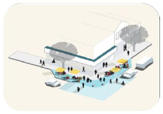
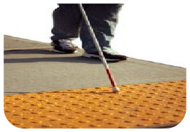
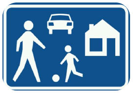

Objetivo general
- Movilidad segura y accesibilidad universal.
- Adaptación de infraestructura vial.
- Prioridad al peatón.
- Promoción de movilidad no motorizada y uso transporte público.
Líneas Estratégicas
Principalmente busca reactivar la zona mediante 4 estrategias de acción:
 Mejoramiento de Imagen Urbana y Espacio Público
 Accesibilidad Universal
 Visión Cero
Estrategias
- Pacificación de tránsito.
- Woonerf.
- Promoción de uso de bicicleta y transporte público.
- Prioridad al peatón y desinsentivación del uso del automóvil.
- Naturación.
- Políticas públicas de fomento de movilidad no motorizada y uso de transporte público.
Principios y valores
- Accesibilidad universal.
- Visión cero.
- Convivencia sana y segura.
¿Quienes participan?
- IMPLAN.
- Dirección de Movilidad No Motorizada.
- Dirección de Obras Públicas.
- Dirección General de Ordenamiento Territorial y Urbanismo.
- Dirección de Centro Histórico.
- Policía municipal.
- Restauranteros.
- Empresarios.
- Transportistas y Taxistas.
- Consejos de vialidad y transporte.
- Colectivos ciclistas.
- Instituciones privadas.
Metodología de desarrollo del Proyecto
- Creación de alianza Estratégica del Centro histórico.
- Proyecto Piloto.
- Prueba de Proyecto Piloto.
- Diseño de Planes, Programas, políticas públicas y acciones integrales complementarias.
- Anteproyecto Ejecutivo.
Indicadores Conteo Peatonal
De clic aquí para DESCARGAR el archivo PDF de 4 MB sobre la fase de recopilación de la información.
Propuesta de Acciones
- Baja velocidad de tránsito (máx. a 30 km/h), señalización y normativa.
- Tráfico acotado.
- Estacionamiento limitado y facilidad de movilidad no motorizada y en transporte público.
- Crear ciclovías y su infraestructura y mobiliario y conectar con las existentes.
- Modificar trazado de área de ciurculación de vehículos de motor y su entorno.
- Infraestructura y mobiliario adecuado para uso de todos.
- Ampliación de banquetas para que sea caminable y peatonalización de calles.
- Habilitar plenamente el espacio público para convivencia segura, recreativa, de descanso y para estar.
- Uso de plantas y árboles y rescate de paisaje urbano.
- Estacionamientos privados localizados estratégicamente.
- Pavimentos táctiles y adecuación para una accesibilidad universal.
- Creación de cruces accesibles y seguros.
Beneficios
- Espacio público para convivencia sana y segura.
- Uso de bicicleta y conexión con ciclovía constitución.
- Corredor verde peatonal, primer etapa de estructura verde urbana.
- Reactivación económica de la zona.